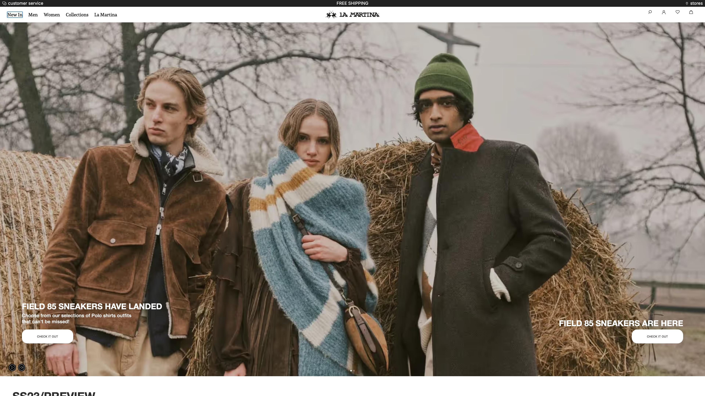
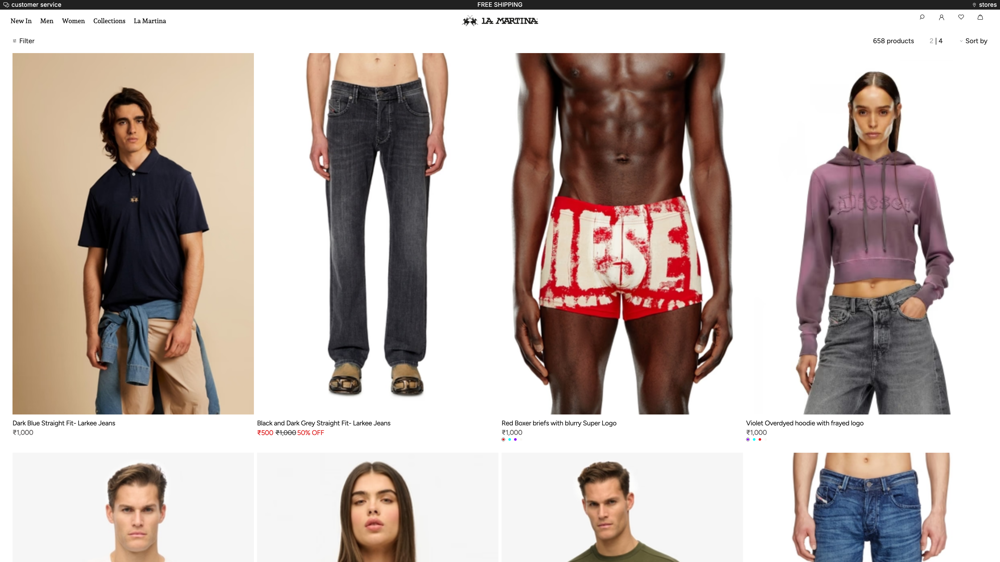
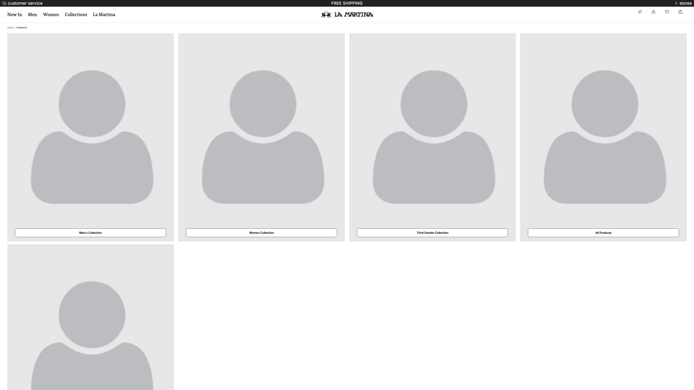
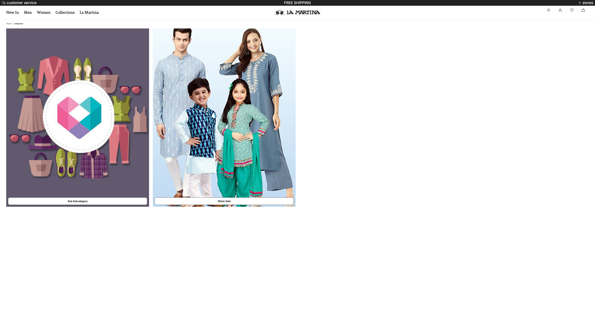
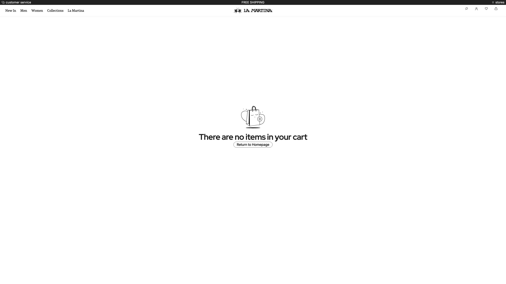
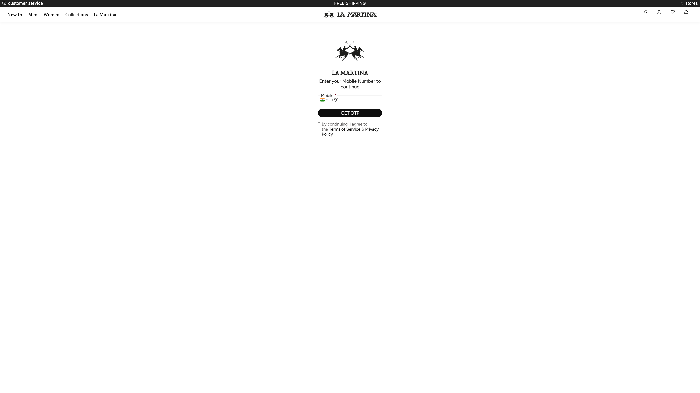
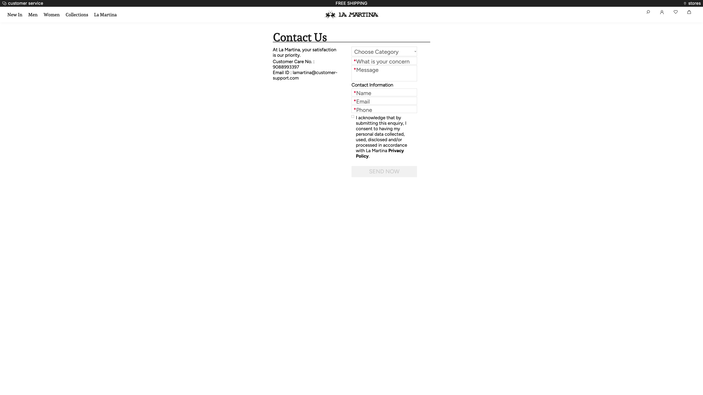
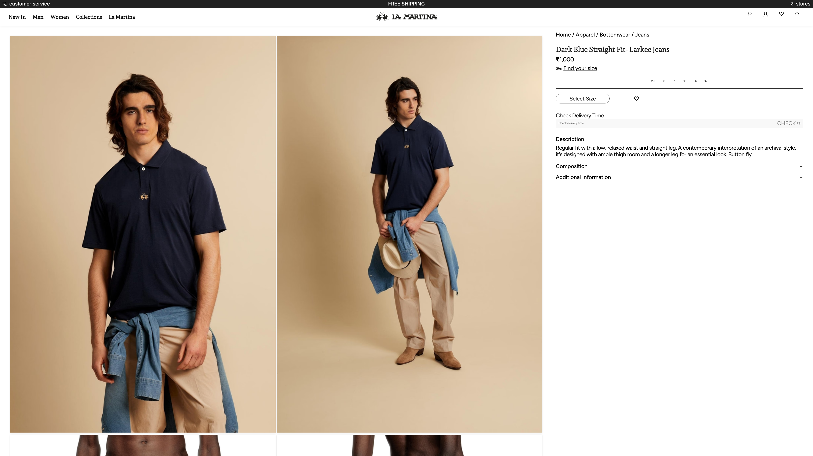

4K Recheck Report 18 STILL OPEN
2026-04-13 · Rechecked 22 bugs · 3840×2160 · Original: 2026-04-03
lamartina.fynd.io
3 Fixed
18 Open
1 Unknown
22
Total Bugs
3
Fixed
18
Still Open
1
Unknown
2
Critical Open
14%
Fix Rate
Before vs After Comparison
Original report: 2026-04-03 → Recheck: 2026-04-13 (10 days later)
| Bug ID | Issue | Severity | Original | Current | Status | Trend |
|---|---|---|---|---|---|---|
| BUG-001 | Nav Bar Covers Only 14% of Viewport | High | 14% (554px) | 100% (3840px) | FIXED | Resolved |
| BUG-002 | Blurry Images on Home (/) | High | 7 blurry (2.1x) | 9 blurry (2x) | OPEN | Worse (+2) |
| BUG-003 | Untappable Elements on Home (/) | High | 7 elements <25px | 13 elements <25px | OPEN | Worse (+6) |
| BUG-004 | Images Missing Alt Text on Home (/) | Medium | 9 missing alt | 6 missing alt | OPEN | Improved (-3) |
| BUG-005 | Blurry Images on Products | High | 17 blurry (3.1x) | 38 blurry (3.1x) | OPEN | Worse (+21) |
| BUG-006 | Untappable Elements on Products | High | 7 elements <25px | 25 elements <25px | OPEN | Worse (+18) |
| BUG-007 | Blurry Image on Collections | High | 1 blurry (3.0x) | 5 blurry | OPEN | Worse (+4) |
| BUG-008 | Untappable Elements on Collections | High | 8 elements <25px | 10 elements <25px | OPEN | Worse (+2) |
| BUG-009 | Images Missing Alt Text on Collections | Medium | 5 missing alt | 5 missing alt | OPEN | Unchanged |
| BUG-010 | Untappable Elements on Categories | High | 8 elements <25px | 10 elements <25px | OPEN | Worse (+2) |
| BUG-011 | Untappable Elements on Cart | High | 7 elements <25px | 9 elements <25px | OPEN | Worse (+2) |
| BUG-012 | Untappable Elements on Auth/Login | High | 7 elements <25px | 10 elements <25px | OPEN | Worse (+3) |
| BUG-013 | Excessive Whitespace on Auth/Login | High | 1% used (48px) | 10% used (400px) | OPEN | Improved (+9%) |
| BUG-014 | Untappable Elements on Contact-Us | High | 7 elements <25px | 10 elements <25px | OPEN | Worse (+3) |
| BUG-015 | No Focus Indicators (WCAG 2.4.7) | High | 63/63 (100%) | 7/10 sampled (70%) | OPEN | Improved (-30%) |
| BUG-016 | 4 Header Icons Missing | High | 4 missing | All found | FIXED | Resolved |
| BUG-017 | PDP Size/Variant Selector Missing | Critical | Not found | Still not found | OPEN | Unchanged |
| BUG-018 | PDP Add to Cart/Buy Button Missing | Critical | Not found | Still not found | OPEN | Unchanged |
| BUG-019 | PDP Image Gallery Nav Missing | High | Not found | Still not found | OPEN | Unchanged |
| BUG-020 | PDP Product Price Not Found | High | Not found | Found: ₹1,000 | FIXED | Resolved |
| BUG-021 | PDP Product Description Missing | Medium | Not found | Still not found | OPEN | Unchanged |
| BUG-022 | Search Returns No Results for "shirt" | Medium | No results | Search icon not clickable | UNKNOWN | Could not verify |
Detailed Bug Cards (22)
FIXED BUG-001 — Nav Bar Covers Only 14% of Viewport (Site-Wide)
| Severity | High |
| Category | UI Alignment 4K Responsive |
| Location | All pages at 4K (3840x2160) |
| Before | Nav only 554px (14% of 3840px) — site-wide issue |
| After | Nav now covers 100% (3840px of 3840px) |

Recheck screenshot: Home page at 4K — Nav now full-width
OPEN BUG-002 — Blurry Images on Home (/) WORSE
| Severity | High |
| Category | Image Quality 4K Responsive |
| Location | / on 4K (3840x2160) |
| Before | 7 blurry images (2.1x upscale) |
| After | 9 blurry images — "theme-default-image" 1920→3840px, "MEN PRE Collection" 578→1221px, "WOMEN PRE Collection" 588→1221px |
| Fix | Serve higher-res images via srcset/CDN params. Min source: 2400px for 4K hero images. |
Recheck screenshot: Home page — blurry images still present
OPEN BUG-003 — Untappable Elements on Home (/) WORSE
| Severity | High |
| Category | UI Alignment |
| Location | / on 4K (3840x2160) |
| Before | 7 elements under 25px tall |
| After | 13 elements under 25px: "New In" 498x23px, "Men" 498x23px, etc. |
| Fix | Increase padding/font-size for links and buttons. Min target: 44x44px (WCAG). |
OPEN BUG-004 — Images Missing Alt Text on Home (/) IMPROVED
| Severity | Medium |
| Category | Accessibility SEO |
| Location | / on 4K (3840x2160) |
| Before | 9 images missing alt text |
| After | 6 images still missing alt text (improved from 9) |
| Fix | Add descriptive alt text to all product/content images. |
OPEN BUG-005 — Blurry Images on Products WORSE
| Severity | High |
| Category | Image Quality |
| Location | /products on 4K (3840x2160) |
| Before | 17 blurry images (3.1x upscale) |
| After | 38 blurry images — "Dark Blue Straight Fit- Larkee Jeans" 300→927px (3.1x upscale) |
| Fix | Serve higher-res images via srcset/CDN params. Min source: 900px for 4K. |

Recheck screenshot: Products page — blurry images persist
OPEN BUG-006 — Untappable Elements on Products WORSE
| Severity | High |
| Before | 7 elements under 25px |
| After | 25 elements under 25px |
OPEN BUG-007 — Blurry Image(s) on Collections WORSE
| Severity | High |
| Before | 1 blurry image (3.0x upscale) |
| After | 5 blurry images |

Recheck screenshot: Collections page at 4K
OPEN BUG-008 — Untappable Elements on Collections WORSE
| Severity | High |
| Before | 8 elements under 25px |
| After | 10 elements under 25px |
OPEN BUG-009 — Images Missing Alt Text on Collections UNCHANGED
| Severity | Medium |
| Before | 5 images missing alt |
| After | 5 images still missing alt |
OPEN BUG-010 — Untappable Elements on Categories WORSE
| Severity | High |
| Before | 8 elements under 25px |
| After | 10 elements under 25px |

Recheck screenshot: Categories page at 4K
OPEN BUG-011 — Untappable Elements on Cart WORSE
| Severity | High |
| Before | 7 elements under 25px |
| After | 9 elements under 25px |

Recheck screenshot: Cart page at 4K
OPEN BUG-012 — Untappable Elements on Auth/Login WORSE
| Severity | High |
| Before | 7 elements under 25px |
| After | 10 elements under 25px |

Recheck screenshot: Auth/Login page at 4K
OPEN BUG-013 — Excessive Whitespace on Auth/Login IMPROVED
| Severity | High |
| Before | Content uses only 1% (48px of 3840px) |
| After | Content uses 10% (400px of 3840px) — improved but still far below 60-80% target |
| Fix | Increase max-width for large viewports. Use responsive layout. Target: 60-80% viewport usage. |
OPEN BUG-014 — Untappable Elements on Contact-Us WORSE
| Severity | High |
| Before | 7 elements under 25px |
| After | 10 elements under 25px |

Recheck screenshot: Contact-Us page at 4K
OPEN BUG-015 — No Focus Indicators (WCAG 2.4.7) IMPROVED
| Severity | High |
| Category | Accessibility WCAG 2.4.7 |
| Before | 63/63 elements (100%) lack focus indicators |
| After | 7/10 sampled elements (70%) still lack focus indicators — improved but still non-compliant |
| Fix | Add :focus-visible { outline: 2px solid currentColor; } to all interactive elements. |
FIXED BUG-016 — 4 Header Icons Missing
| Severity | High |
| Category | Navigation |
| Before | Cart, Account, Wishlist, Search icons all missing |
| After | All 4 icons now present: Cart, Account, Wishlist, Search |
OPEN Critical BUG-017 — PDP Size/Variant Selector Missing UNCHANGED
| Severity | Critical — Blocks purchase flow |
| Category | UI Functionality PDP |
| Before | Size/Variant selector not found at 4K |
| After | Still not found — no size/variant selector visible at 4K |
| Fix | Check if Size/Variant Selector component renders at 4K. Verify no media queries hide it. |

Recheck screenshot: PDP at 4K — Size selector still missing
OPEN Critical BUG-018 — PDP Add to Cart/Buy Button Missing UNCHANGED
| Severity | Critical — Blocks purchase flow |
| Category | UI Functionality PDP |
| Before | Add to Cart / Buy button not found at 4K |
| After | Still not found — purchase flow completely blocked at 4K |
| Fix | Check if Add to Cart / Buy Button component renders at 4K. Verify no media queries hide it. |
OPEN BUG-019 — PDP Image Gallery Nav Missing UNCHANGED
| Severity | High |
| Before | Image Gallery Navigation not found at 4K |
| After | Still not found at 4K |
FIXED BUG-020 — PDP Product Price Not Found
| Severity | High |
| Category | UI Functionality PDP |
| Before | Product Price Display not found at 4K |
| After | Price now visible: ₹1,000 |
OPEN BUG-021 — PDP Product Description Missing UNCHANGED
| Severity | Medium |
| Before | Product Description not found at 4K |
| After | Still not found at 4K |
UNKNOWN BUG-022 — Search Returns No Results for "shirt"
| Severity | Medium |
| Category | UI Functionality Search |
| Before | Search for "shirt" returned no product results |
| After | Could not verify — search icon not clickable at 4K viewport (element not visible) |
| Note | The search icon may be hidden or positioned off-screen at 4K, making it inaccessible. This itself could be a related bug. |
Recheck screenshot: Search attempt at 4K — icon not clickable
4K Recheck Report · lamartina.fynd.io · 3 Fixed / 18 Open / 1 Unknown · 2026-04-13
Original report: 2026-04-03 · Recheck interval: 10 days
Original report: 2026-04-03 · Recheck interval: 10 days